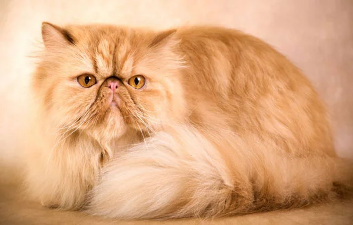
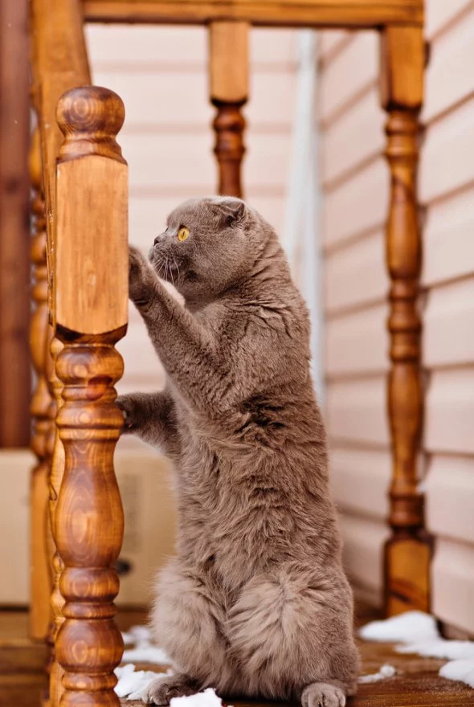
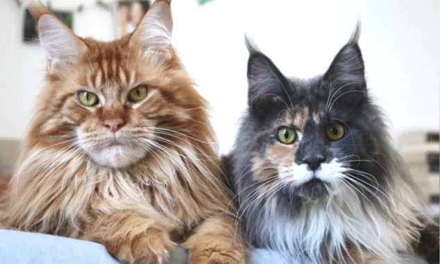
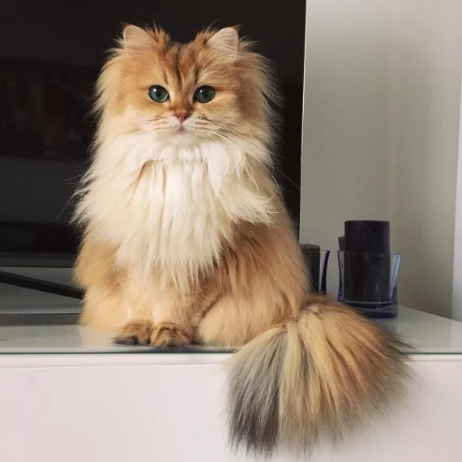
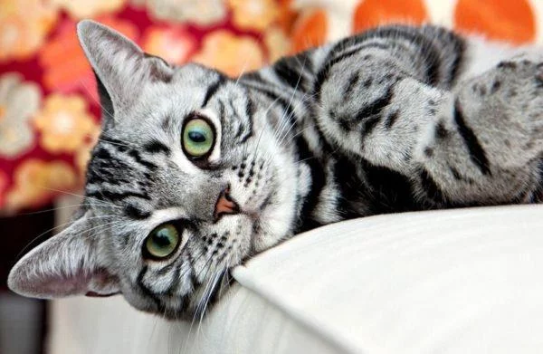

Іноді природа старається настільки, що під її творчими “руками” виходять справжні шедеври. Кожен власник вусатого смугастика переконаний в тому, що його вихованець – найкрасивіший, найрозумніший і найдобріший. Ми підтримуємо цю думку і вважаємо, що будь-який кіт-воркіт має свою неповторну чарівність. Проте, ми підготували для вас Топ-5 котиків, які найкраще підійдуть для вашої родини за версією нашого видання. Тож переглядайте цих пухнастиків і вибирайте муркотуна, який буде чекати на вас вдома!
-

Персидська кішка
Гарна і пухнаста, ця красуня прекрасно підходить для тих, хто не любить поспіх і вибирає розмірений спосіб життя. Вона прив’язується до господарів, а ось незнайомців ігнорує. У міру активна, поводить себе переважно спокійно.
-

Шотланська кішка
Шотландці схожі на британців через густу, але коротку шерсть і широку мордочку. Відрізняються вони особливими кумедними вухами. Ці коти до сім’ї дуже прив’язуються. А ще вони вміють кумедно стояти на задніх лапках.
-

Мейн-кун
Це одні з найрозуміших котів. А ще вони досить великі і привертають увагу екзотичною зовнішністю. Ці тварини досить гордовиті, але віддані господарю, чужинців не любить. Але вимагають багато місця. Для квартири не підійдуть, а ось для заміського будинку — так.
-

Британська довгошерста кішка
Порода цієї киці на ім’я Смузі — британська довгошерста кішка. Дивовижно красива рудо-біла масть поєднується зі смарагдовими очима. В таких котах ви ніколи не розчаруєтеся, бо байдуже дивитися на них просто не виходить!
-

Американська короткошерста кішка
Ці кішки є одними з найкращих для квартирного утримання. Вони невибагливі, за ними легко доглядати, ласкаві, ніжні, у них прекрасне здоров’я і поступливий характер.